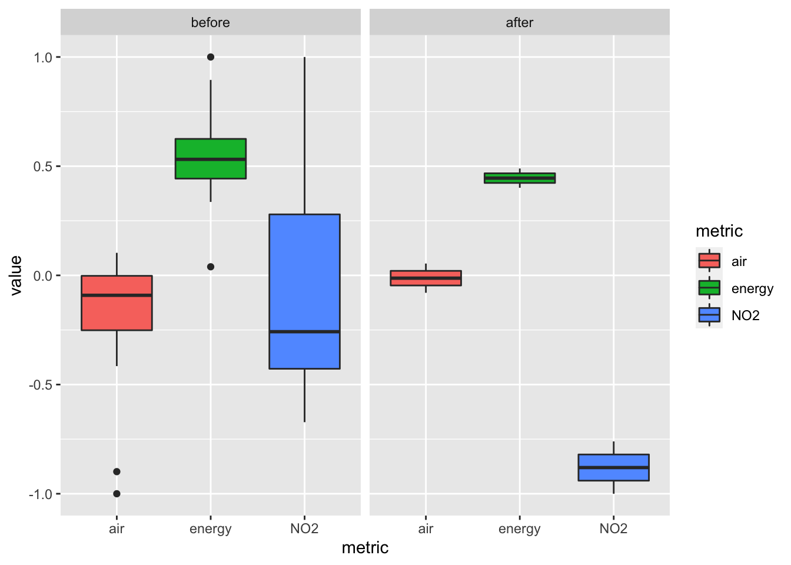

Lesson 3 Integration
3.1 Time series plot of satellite & sentiment metrics
Let’s now integrate data from satellite and sentiment into the same monthly time series plot, first rescaling all metrics -1 to 1 for comparison.
library(here)
library(glue)
library(readr)
library(dplyr)
library(lubridate)
library(scales)
library(ggplot2)
library(plotly)
# paths
loc_name <- "delhi"
satellite_csv <- here(glue("data/no2_{loc_name}_ee-chart.csv"))
sentiments_csv <- here(glue("data/sentiments_{loc_name}.csv"))
metrics_csv <- here(glue("data/metrics_{loc_name}.csv"))
if (!file.exists(metrics_csv)){
satellite <- read_csv(satellite_csv) %>%
transmute(
date = mdy(`system:time_start`),
date_ym = floor_date(date, unit = "month"),
no2 = NO2_column_number_density) %>%
filter(!is.na(no2)) %>%
group_by(date_ym) %>%
summarize(
no2 = mean(no2, na.rm=T)) %>%
mutate(
metric = "NO2",
value = rescale(no2, to = c(-1, 1))) %>%
select(metric, date_ym, value)
sentiments <- read_csv(sentiments_csv) %>%
rename(date_ym = ym_date) %>%
mutate(
metric = glue("{query_name}"),
value = rescale(tf_score, to = c(-1, 1))) %>%
select(metric, date_ym, value)
bind_rows(
satellite,
sentiments) %>%
write_csv(metrics_csv)
}
metrics <- read_csv(metrics_csv)
g <- metrics %>%
ggplot(
aes(x = date_ym, y = value, color = metric)) +
geom_line()
ggplotly(g)Interesting! The air quality sentiment (red line) does seem to be inversely correlated with nitrogen dioxide (NO2; blue line). The sentiment for clean energy (green line) seems to correlate with satellite NO2 until 2019-03 then remains relatively steady.
3.2 Box plot of satellite & sentiment metrics before/after lockdown
Let’s compare averages before and after lockdown March 24, 2020.
date_lockdown <- as.Date("2020-03-24")
metrics_ba <- bind_rows(
metrics %>%
filter(date_ym <= date_lockdown) %>%
mutate(
period = "before"),
metrics %>%
filter(date_ym > date_lockdown) %>%
mutate(
period = "after")) %>%
mutate(
period = factor(period, c("before", "after"), ordered = T))
# View(metrics_ba)
metrics_ba %>%
ggplot() +
geom_boxplot(aes(x = metric, y = value, fill = metric)) +
facet_wrap(~period)
The sentiments do not look significantly different before and after lockdown, especially relative to the dramatically different NO2 (blue).
References
Gorelick, Noel, Matt Hancher, Mike Dixon, Simon Ilyushchenko, David Thau, and Rebecca Moore. 2017. “Google Earth Engine: Planetary-Scale Geospatial Analysis for Everyone.” Remote Sensing of Environment, Big Remotely Sensed Data: Tools, applications and experiences, 202 (December): 18–27. https://doi.org/10.1016/j.rse.2017.06.031.
Gurajala, Supraja, Suresh Dhaniyala, and Jeanna N. Matthews. 2019. “Understanding Public Response to Air Quality Using Tweet Analysis.” Social Media + Society 5 (3): 2056305119867656. https://doi.org/10.1177/2056305119867656.
Sluban, Borut, Jasmina Smailović, Stefano Battiston, and Igor Mozetič. 2015. “Sentiment Leaning of Influential Communities in Social Networks.” Compu Social Networls 2 (1): 9. https://doi.org/10.1186/s40649-015-0016-5.